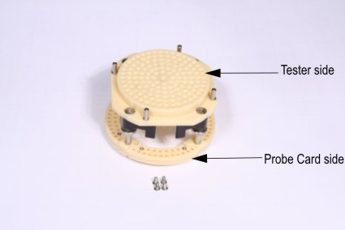
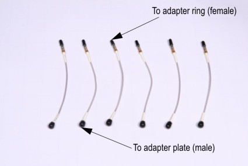
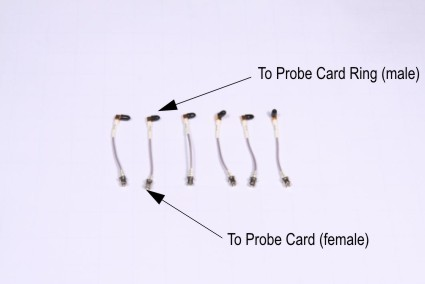
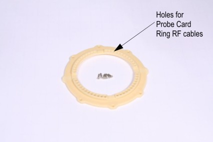
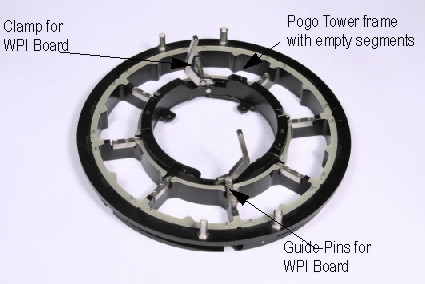
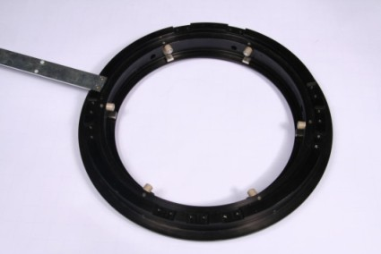
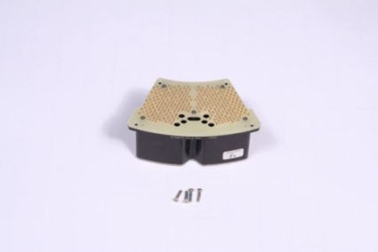
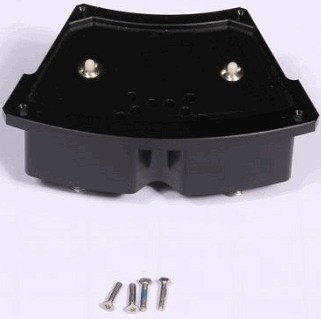
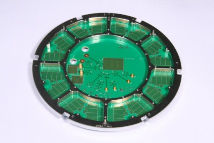
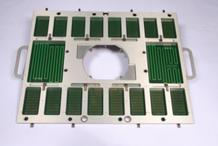

12" WPI components
This section introduces the main components of the 12" wafer prober interface and explains their usage.
Port Scale RF Adapter Plate kit for 12" WPI
The following picture shows the Port Scale RF adapter plate kit (N2398A) for the 12" auto probe card changer. On the upper side, you will find the connector plate (tester side), on the lower side you will see the connector ring (probe card side). The connector ring contains 4 segments. Each segment has 18 holes for RF connectors. A maximum number of 72 RF cables can be connected using one Port Scale adapter kit.

RF Cables for Probe Card Ring and adapter plate
To connect the adapter plate kit, 2 sets of RF cables are used as shown in the next pictures. The first set contains 6 SMP cables of a length of 6" each (N2398A-001). The female site goes to the probe card ring connector ring and the male site goes to the adapter plate. The location of the cable on the plate is application specific.
The lower set contains 6 SMP rectangle RF cable of a length of 3" each (N2398A-003). The female side goes to the probe card and the male site goes to the Port Scale Probe Card Ring.


RF Probe Card Ring
The Port Scale RF 12" probe card ring (N2398A-002) contains 48 pin locations. The male site of each SMP rectangle cable (N2398A-003) is connected to the probe card ring. The location is application specific.

Pogo Tower Frame
The pogo tower frame (E7018M), shown in the next picture, is a physical extension of the DUT interface that uses pogo pins to connect the WPI DUT board to the probe card. The pogo tower is a fixture for the full segments, the empty segments, the wafer prober interface board and the RF connector plate. For auto changer use the automatic version of the pogo tower frame(E7018K). The pogo tower frame provides guide pins for the WPI-board and clamp for the wafer prober interface.

Probe Card Mounting Ring
The probe card manufacturer kit (E7018L) also called mounting ring is a fixture for the pogo tower and the probe card. Note that the mounting ring is only needed by the manul version (E7018M).

12" WPI full segment
The following picture shows prober interface full segment (E7018KB). Each full segment contains 160 pins (signal, DPS, and utility), surrounded by 152 ground pins and occupies a pogo tower frame slot. All ground pogo pins are connected within a pogo segment, allowing for isolation between digital and analog grounds.

12" WPI empty segment
Blank segments or empty segments (E7018KD ) are spring-loaded segments with no pins. Always equip all unused slots of the pogo tower with blank segments to ensure an equal distribution of pressure on the probe card and to provide physical protection to all parts of the probe card. A blank segment for 12" wafer prober interface is shown in the following picture.

12" WPI Probe Card Stiffener
The probe card stiffener (E7018LA) contains as many segments as the pogo tower frame. It is a fixture for the probe card as illustrated in the next picture. The probe card stiffener stabilizes the probe card to resist the pressure of the pogo pins. This ensures optimum planarity of the probe card. The stiffener also provides the necessary mechanical elements for docking of the probe card to the pogo tower.

12" Wafer Prober Interface (large DUT Board)
The large DUT Board stiffener for the 12" wafer prober interface (E7018GB) is shown in the next picture.

Functional changes
- Introduced in SmarTest 6.3.2